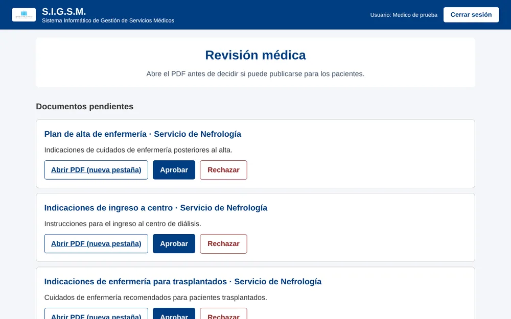
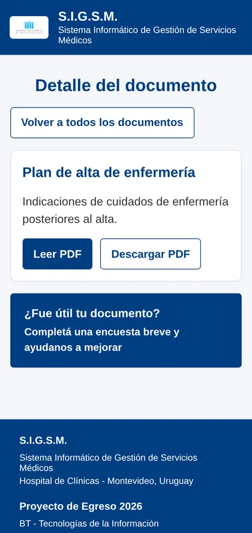
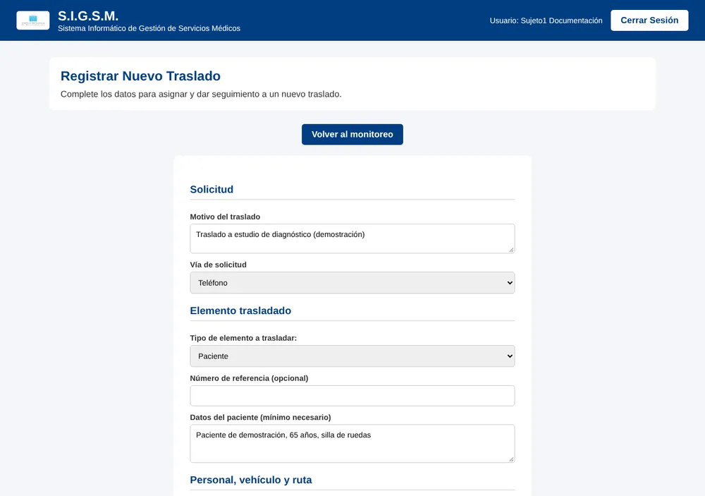
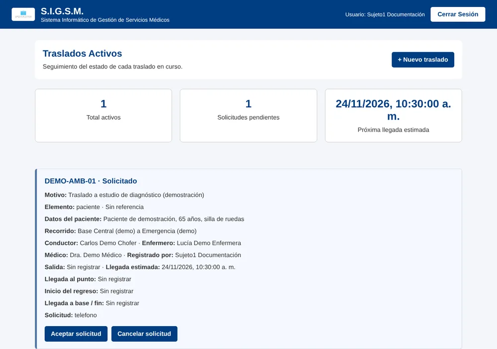

Soluciones IT para el sector salud.
NovaTech desarrolla sistemas informáticos para hospitales. Nuestro primer producto, SIGSM, reúne la documentación del paciente con códigos QR y la trazabilidad de ambulancias.
Tecnología sencilla para quienes cuidan de la salud
NovaTech S.R.L. es un equipo de cuatro socios fundadores que desarrolla software para instituciones, con foco en el sector salud. Creemos que muchas tareas se pueden simplificar con herramientas digitales bien pensadas.
Crear herramientas tecnológicas sencillas y útiles que ayuden a las instituciones de salud a organizar sus tareas, gestionar documentos y hacer un mejor seguimiento de los traslados, cuidando la seguridad de la información y las necesidades de los usuarios.
Ser una empresa reconocida en Uruguay por desarrollar soluciones informáticas para instituciones de salud, ayudando a mejorar la organización de la información y los procesos de trabajo.
Nuestro sistema: SIGSM
Sistema Informático de Gestión de Servicios Médicos. Dos módulos que trabajan juntos.
Documentación con QR
Acceso digital a la documentación del paciente con un código QR.
- Catálogo de documentos y ficha pública
- Encuestas anónimas para pacientes
- Gestión de documentos para funcionarios
Trazabilidad de ambulancias
Seguimiento de cada ambulancia y gestión de los traslados.
- Formulario para registrar traslados
- Panel de traslados activos
- Monitoreo general y administración de ambulancias
Del PDF al celular del paciente
Así llega un documento a quien lo necesita.
- El funcionario sube el PDFDesde la sección Documentos, con el PDF ya preparado.
- El médico lo revisa y lo apruebaEl documento queda pendiente hasta que un médico lo aprueba.
- El paciente lo abre con el QREscanea el código y consulta la ficha, sin crear una cuenta.
Demostración del sistema
Capturas del prototipo funcionando, con datos de prueba. Un recorrido completo, de la carga del documento al seguimiento de la ambulancia.




Lo que resolvemos
Los hospitales manejan mucha información y tareas administrativas que llevan tiempo. Esto es lo que mejora SIGSM.
Del pedido al traslado finalizado
Así se gestiona una ambulancia desde que se solicita.
- Se registra el trasladoCon el formulario: origen, destino y horario.
- Se asignan chofer y vehículoEl traslado aparece en el panel de activos.
- Se hace el seguimientoEl monitoreo general muestra el estado de cada ambulancia.
- Se cierra y queda el historialTodo queda registrado para consultar después.
Cada persona ve lo que le corresponde
La información de salud es sensible. SIGSM separa lo público de lo interno y exige aprobación médica antes de publicar.
Trabajamos teniendo presente la Ley 18.331 de protección de datos personales de Uruguay.
Empezamos por un hospital, pensamos en muchos
Nos concentramos en dos necesidades concretas del sector salud en lugar de ofrecer una herramienta general.
- Hospital de ClínicasImplementamos SIGSM en su infraestructura, como primer cliente.
- Aprender y mejorarUsamos esa experiencia para pulir el sistema.
- Otras institucionesEvaluamos llevarlo a otras instituciones de salud, públicas y privadas.
Cómo trabajamos
Cuatro socios, un mismo objetivo
Las decisiones importantes las tomamos entre todos, en reuniones semanales.
Hecho con
Tecnologías abiertas, que se instalan en un servidor Linux.
- HTML y CSS
- JavaScript
- PHP
- MySQL
- Docker
- Linux
Software abierto y sin licencias: la institución lo instala en su propio servidor y evita costos de licenciamiento. Docker hace que la instalación sea prolija y repetible.
Lo que suelen preguntarnos
¿El paciente necesita crear una cuenta?
No. Escanea el QR y consulta la ficha directamente desde el navegador del celular.
¿Dónde se guardan los datos?
En la base de datos MySQL del servidor Linux de la institución, donde se instala el sistema.
¿Se integra con otros sistemas del hospital?
El prototipo funciona de forma independiente. Evaluamos las integraciones junto con cada institución.
¿Qué pasa si se pierde o se rompe un QR?
El QR general lleva al catálogo de documentos, así que se puede reimprimir las veces que haga falta sin perder información.
¿Querés conocer más?
Escribinos y coordinamos una demostración del prototipo de SIGSM.